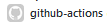
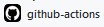
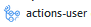

Using bots and apps in GitHub Actions¶
Login to Git as a GitHub App¶
From https://github.com/orgs/community/discussions/24664#discussioncomment-3244950
How would I log into Git as a GitHub App? 🤔 I’ve sort of got it working, but I’m curious what the “actual” way of doing this is 😃
It’s possible to authenticate with GitHub.com as a GitHub App; here’s the section on HTTP-based Git access by an installation.
What would I set as the Git username and email? Thank you!
That’s a great question! The way we currently attribute commits made by GitHub Apps isn’t currently publicly documented in our Setting your commit email address article and is subject to change at anytime without notice. If it’s helpful in the meantime, here’s something you could try (though your mileage may vary over time).
You could set the Git username is the name of your application with [bot] appended at the end. For example, if your bot’s name is machina, then the Git username is machina[bot]:
git config user.name "machina[bot]"
For the email, you could set it to the GitHub App’s user id, a plus sign (+), and its name with [bot] appended, followed by the Users No Reply GitHub email address. For example, if the app’s user id is 123456789, then the email would be:
git config user.email "123456789+machina[bot]@users.noreply.github.com"
actions-packages-examples/github-script__playground@f75a13b
In its patch file, observe the second line’s contents:
From: "github-actions[bot]"
<41898282+github-actions[bot]@users.noreply.github.com>
.patch to the end of that commit URL to reveal the patch information showcasing the actor name and email address we use. I hope this helps!
update Not to be confused with GitHub App ID. This must be the UID for the GitHub App itself. You can find it using the approach from: https://github.com/orgs/community/discussions/24664#discussioncomment-3880274
Getting the App UID¶
A much simpler approach to getting your app's "User ID" is to simply call:
https://api.github.com/users/myapp[bot]
Replacing myapp with your app name, but leaving the [bot] suffix in place. You can get any app's user ID this way (yes, even private apps) - you do not even need to use an auth token for that request, let alone wrangle with creating a JWT from your private key and using the contents API to make a commit from which to get that ID.
Using the GitHub Actions bot user¶
If you want to use the proper GitHub actions bot user, take a look at actions/checkout#13, which has dozens of linked PRs where the proper configurations are configured to use the bot.
The source is actions/checkout#13 (comment 724415212):
I think this would be a nice feature. It would also lead to a more consistent appearance of commits created by GitHub Actions. I'm currently wondering which email address and username I should use for the time being.
- The README.md suggests
github-actions <github-actions@github.com>. However, this email is not recognized by the platform. GitHub displays the author of the commit with the generic icon and without a link. - A thread in the GitHub Support Community suggests
github-actions[bot] <41898282+github-actions[bot]@users.noreply.github.com>. This seems to work nicely. The author of the commit has the same icon and name as GitHub Actions everywhere else. The link goes to https://github.com/features/actions as I would expect. I'm just wondering if there is any caveat since it is not promoted in the README.md. - Most repositories I found seem to use
GitHub Action <action@github.com>. I don't know where this is comming from. GitHub seems to link it to some user but clicking on the user opens a 404-page. The icon and name doesn't match what is usually shown for GitHub Actions. If there is no caveat for the second option, I would suggest that the checkout action configures Git accordingly if none of both options is already set. (Alternatively, GitHub's runners could be updated to use this configuration.)
Examples with updated configuration¶
ad-m/github-push-action¶
From https://github.com/ad-m/github-push-action/pull/72
See the differences between these two 'users' here: actions/checkout#13 (comment)
As well as some investigation here: https://github.community/t/github-actions-bot-email-address/17204
Also changing the default in the docs to reflect the actual default specified in the actions.yml file.
- name: Commit files
run: |
git config --local user.email "41898282+github-actions[bot]@users.noreply.github.com"
git config --local user.name "github-actions[bot]"
git commit -m "Add changes" -a
squidfunk/mkdocs-material¶
From https://github.com/squidfunk/mkdocs-material/pull/6335
Workflow for "Material for MkDocs"
jobs:
deploy:
runs-on: ubuntu-latest
steps:
- uses: actions/checkout@v4
- name: Configure Git Credentials
run: |
git config user.name github-actions[bot]
git config user.email 41898282+github-actions[bot]@users.noreply.github.com
Workflow for "Insiders"
jobs:
deploy:
runs-on: ubuntu-latest
if: github.event.repository.fork == false
steps:
- uses: actions/checkout@v4
- name: Configure Git Credentials
run: |
git config user.name github-actions[bot]
git config user.email 41898282+github-actions[bot]@users.noreply.github.com
idkbrowby/gamingrealm-frontend¶
From: https://github.com/idkbrowby/gamingrealm-frontend/pull/17
- name: Commit file
run: |
git config --global user.name github-actions[bot]
git config --global user.email 41898282+github-actions[bot]@users.noreply.github.com
owner/repo¶
From: https://github.com/northy/pdf-to-markdown-workflow/pull/2
git config --global user.email "41898282+github-actions[bot]@users.noreply.github.com"
git config --global user.name "github-actions[bot]"
owner/repo¶
owner/repo¶